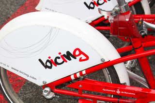

El bicing sitges és un projecte nou amb colaboració d'una empresa de Barcelona per tal de fer de l'ús de la bicicleta una acció més natural, més comoda per moure't que anar en cotxe i més respetuosa amb la natura.
En aquesta iniciativa de bicing a Sitges el que us oferim són diferents tipus de bicicleta (disponibles a l'apartat Productes), diferents rutes opcionals per si es vol fer una de les rutes ja dissenyades (disponibles a l'apartat Rutes i, com no, 4 diferents puestos d'alquiler de les bicicletes repartits per diferents punts de la ciutat de Sitges (disponibles a Localització). Si en voleu saber més, podeu contactar amb nosaltres amb els diferents mètodes que us oferim a l'apartat Contacte.
